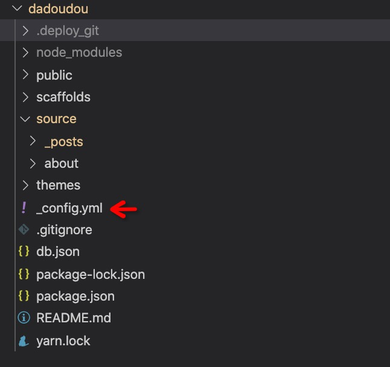

需要准备的
- 域名(如果需要在国内访问需备案)
- 申请阿里云账号,并开通oss存储(我个人注册花了9元买了一年的oss存储-美西区)
- 创建 bucket(oss_bucket) 选择 region (oss_region) - 我的域名没有备案选择了美西区
- 获得阿里云的 access_key 和 access_secrect
- 安装nodejs, git, hexo - 参考 (https://hexo.io/docs/#Installation)
hexo init
blog 文件目录

- public - hexo generate 产生的html/js/css/img 静态资源存放地
- source - 文章(.md)/页面
- themes - 如果自定义themes (https://hexo.io/themes/) 需要下载相应的themes
1 | # install themes(在hexo根目录) |
hexo 常用操作(source)
- hexo new post
文件会出现在 source/_posts/<article_name.md> - hexo new page
会创建一个文件夹 source/about/index.md - hexo new draft
会创建一个草稿 source/_draft/<draft_name.md>
hexo deploy
- install deploy plugins
- npm install hexo-deployer-aliyun –save (or npm install zs1621/hexo-deployer-aliyun –save )
- npm install hexo-deployer-git –save
- config
1 | deploy: |
注意：
- 在阿里云oss控制台里->bucket -> 域名绑定 (设置cname )
- 设置静态网页 bucket -> 基础设置 -> 静态页面 默认首页 index.html (https://help.aliyun.com/document_detail/31872.html?spm=5176.8466029.static.1.3dd71450txechL)
- hexo clean & hexo generate & hexo deploy
1 | INFO Deploying: aliyun |